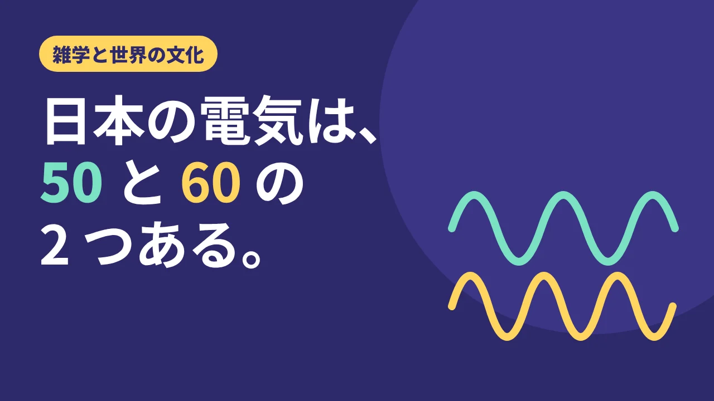

LOTUS VISUAL JOURNAL / 雑学と世界の文化 #01
日本の電気は、50 と 60 の 2 つある。
明治の発電機が決めた境目
もし、同じ国の中で、コンセントの電気の「リズム」が東と西でちがっていたら。
実は日本がそうです。東日本では1秒間に50周期、西日本では60周期の交流が使われています。世界でもめずらしい、この 2 つの周波数。始まりは、明治時代の買い物でした。
01 / ORIGIN東京はドイツ、大阪はアメリカ
家庭のコンセントに来ている電気は「交流」です。交流の電圧はプラスとマイナスに繰り返し変化します。その波が1秒間に繰り返す周期の数が周波数で、単位はヘルツ(Hz)です。
パナソニックの解説によると、日本で周波数が分かれたのは明治の後半のこと。東京電灯はドイツから 50Hz の、大阪電灯はアメリカから 60Hz の交流発電機を、それぞれ買い入れました。その違いが、そのまま東と西の電気に受け継がれ、今の分布になったとされています。
02 / CONVERTER2 つの電気をつなぐ場所
周波数がちがう電気は、そのままではつなげません。そこで、片方の周波数をもう片方に変える「周波数変換所」がつくられました。電源開発の佐久間周波数変換所は、1965 年に、東日本(50Hz)と西日本(60Hz)の電力系統をはじめてつないだ施設として紹介されています。
一度決まった規格は、なかなか変えられません。発電所も、変電所も、工場の機械も、それに合わせて作られていくからです。小さな選択が、国じゅうの設備を縛っていく。電気の世界の「境目」は、そのいちばん大きな例かもしれません。
03 / TWIST見えないリズムは、映像に映る
ここで話は、映像の世界につながります。電気のリズムは、目には見えません。ところが、照明の種類によっては、明るさがこのリズムに合わせてわずかに揺れているものがあります。人の目には気にならなくても、カメラで撮ると、画面に明るさのちらつきや帯が出ることがあるのです。
つまり、東で撮るか、西で撮るかで、カメラの設定の確かめ方が変わることがある。明治の発電機の買い物が、令和のイベント映像の本番前のチェックにまで顔を出している、ということになります。
04 / ON SITELOTUS VISUAL の現場では
イベントの会場には、会場の照明、ステージの照明、LED ビジョンと、光るものがたくさんあります。そこへ配信や収録のカメラが入ると、照明や画面の映り方を本番前に確かめておくことが大切になります。
LOTUS VISUAL の技術提供では、リハーサルの段階でカメラ越しの画面を見て、ちらつきや帯が出ていないかを確かめ、出ていれば機材の設定や置き方をその場で調整します。会場がどの地域にあるかも、確認の手がかりの一つです。本番と同じ撮影条件で短く試し撮りし、カメラの画面だけでなく、実際の収録映像や配信先の映像にもちらつきや帯が出ていないかを確かめます。画面にカメラを向けたときの横じまについては、読みもの「帯が流れる画面」でもくわしく紹介しています。
05 / TAKEAWAY今日の持ち帰り
- 日本の電気は、東日本が 50Hz、西日本が 60Hz。明治の後半、東京電灯がドイツ製、大阪電灯がアメリカ製の発電機を買ったことが始まりとされる。
- 2 つの電気をつなぐ周波数変換所があり、佐久間周波数変換所は 1965 年に東西の系統をはじめてつないだ。
- 照明の種類によっては、電気のリズムがカメラの映像にちらつきとして出ることがある。本番前に、カメラ越しで確かめる。
出典:パナソニック「周波数」(東京電灯がドイツから 50Hz、大阪電灯がアメリカから 60Hz の発電機を購入)／電気学会 でんきの礎「佐久間周波数変換所」(佐久間周波数変換所の解説)／電源開発「沿革」1965年10月(運転開始と国内初の異周波数東西電力供給)。パナソニックと電源開発のページは2026年11月10日閲覧。カメラのちらつきの出方は、照明・機材・設定によって異なります。